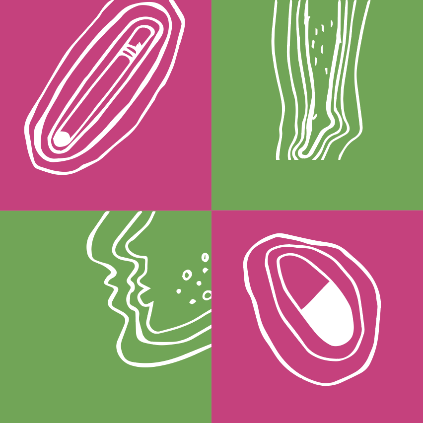
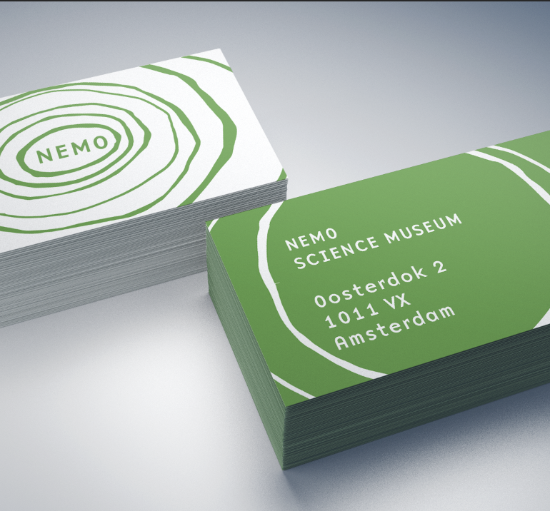
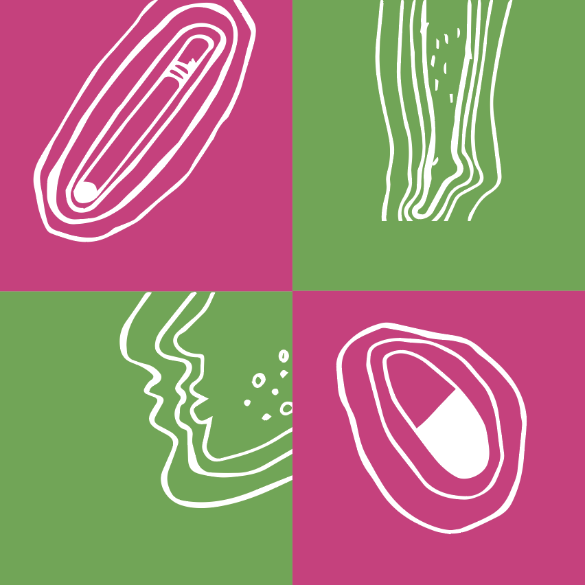
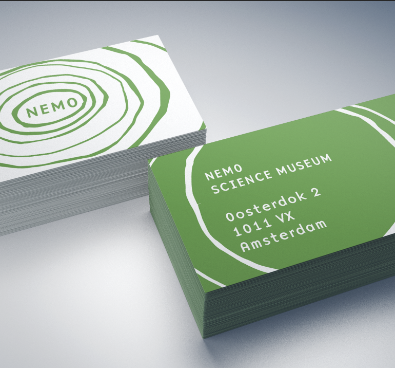

Nemo nieuwe huisstijl
In mijn 2e jaar van CMD het project Visual gevolgd. Daarvoor kreeg ik de opdracht om de huidige sfeer van Science Museum Nemo te gaan onderzoeken, daar een klein onderdeel van te pakken en die uit te vergroten tot een nieuwe huisstijl.
 


